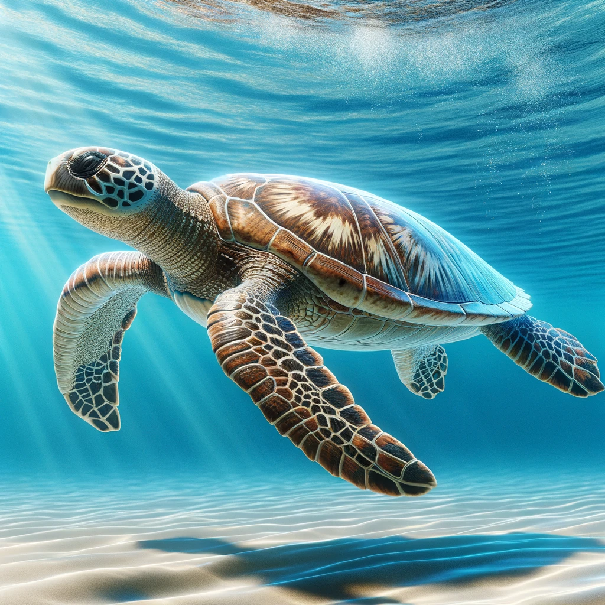

Sea Turtles Life Cycle
Eggs
Hatchling

Juvenile

Adult
Help us make the beaches safe for the next generation
Sea turtles are fascinating and ancient mariners of the ocean, having graced our waters for millions of years. Their life cycle begins in a remarkable journey where females laboriously crawl onto sandy beaches to lay their eggs. Each nest, a cradle of life, can contain up to a hundred eggs, but not all will survive. After incubation, tiny hatchlings emerge and scramble towards the sea, guided by the natural light horizon over the ocean. This first journey is perilous, as seagulls and crabs often prey on these vulnerable newborns, drastically reducing their chances of survival. But the challenges for sea turtles don't end there. Human activities have introduced new threats, from plastic pollution and fishing nets in the oceans to artificial lighting on beaches, which can disorient hatchlings, leading them away from the sea. Coastal development has also resulted in the loss of nesting habitats. Remarkably, sea turtles play a crucial role in maintaining the health of marine ecosystems. For instance, their grazing helps maintain healthy seagrass beds and coral reefs, benefiting countless other marine species. Protecting sea turtles, therefore, is not just about saving an iconic species but also about preserving the balance of our marine environments. Every effort to reduce our environmental impact and safeguard their nesting sites contributes significantly to the survival of these incredible creatures.
Eggs
Hatchling
Juvenile
Adult